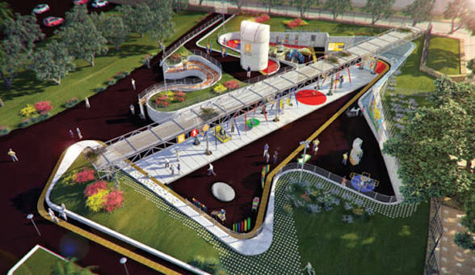

Conocenos:

"Villa Dolores: un lugar para aprender, descubrir y conectar con la naturaleza"
Misión
Ofrecer a la comunidad un espacio de encuentro, recreación y aprendizaje, promoviendo la educación ambiental, el respeto por los animales y la conservación de la biodiversidad. A través de experiencias educativas y recreativas, buscamos acercar a las personas al mundo animal y fomentar una mayor conciencia sobre el cuidado de la naturaleza.
Visión
Consolidarse como un espacio de referencia en Montevideo en materia de educación ambiental, conservación y bienestar animal, renovando su vínculo con la comunidad y convirtiéndose en un lugar donde las generaciones presentes y futuras puedan aprender, disfrutar y comprometerse con la protección de la biodiversidad.
Objetivo general
Promover la educación ambiental y la sensibilización sobre la importancia de la biodiversidad, ofreciendo un espacio accesible para el disfrute familiar, el aprendizaje y el acercamiento responsable al mundo animal3